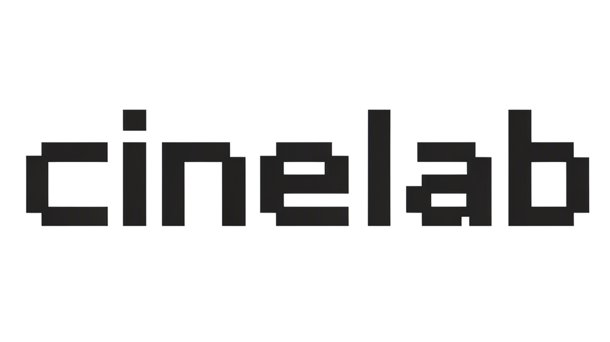
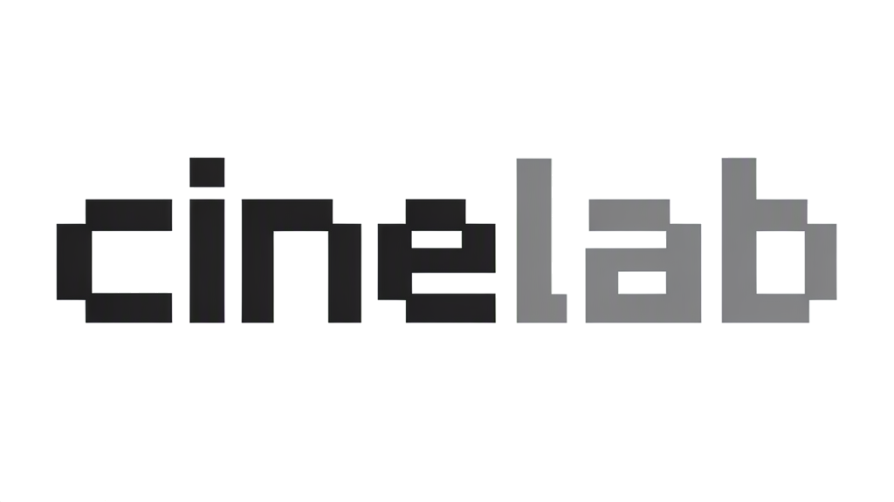

结构：实心模块化 cinelab，等宽，纯直角，透明背景。
初评：拼写正确，整体成立。但 c 与 i 的间距偏大、e 的横杠偏低、a 的上部形状偏圆，需要精修。

结构：cine 黑色 + lab 灰色，透明背景。
初评：层次更接近 OpenCode 的双色逻辑。但灰色偏浅、对比不足，字距与字母形状问题与 H1 相同。
结构：黑色方形底 + 模块化 C，上半白色、下半浅灰。
初评：最接近 OpenCode 的 icon 结构。但 C 的左上与右上块有断点，上下分界不够清楚，需要重排方块。
结构：黑色方形底 + 中灰模块化 C。
初评：整体最统一，但 C 的剪影偏 "["，缺少 OpenCode 那种上下分层的记忆点。